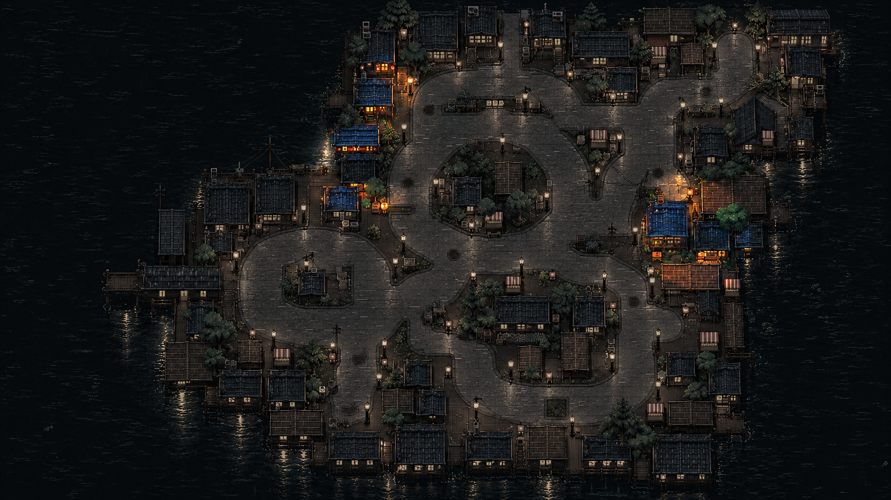
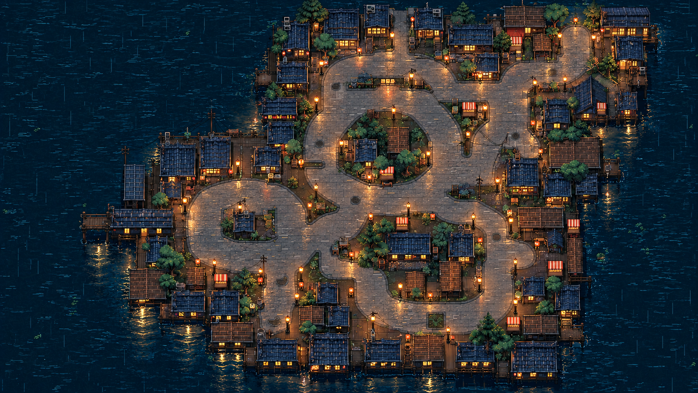
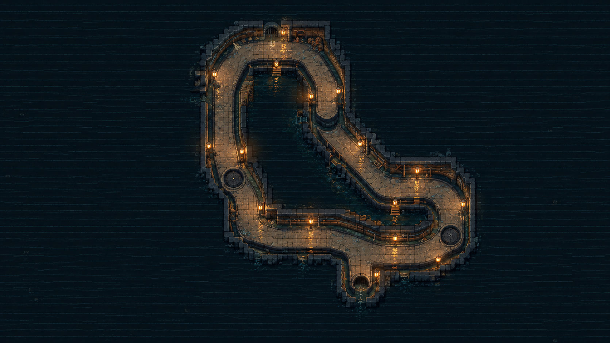
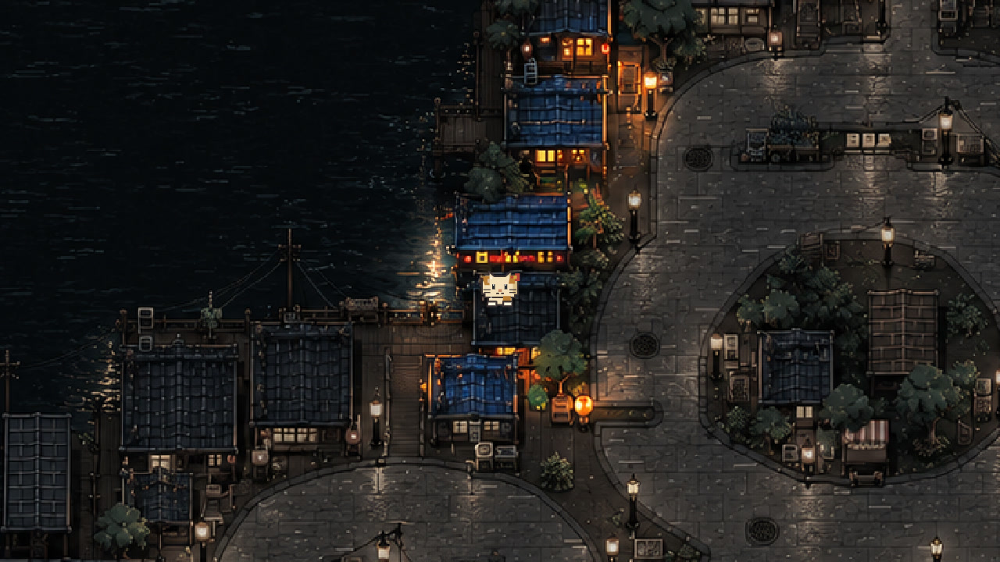
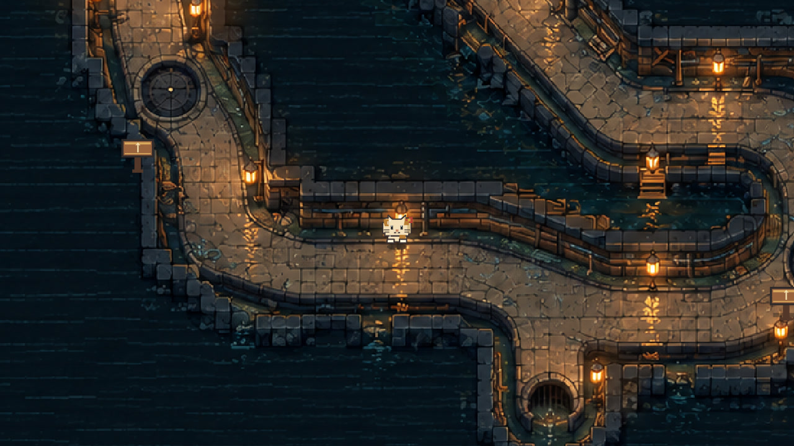

Rainy Alley · Old Huang
NEW current build · 5.70 s · approach → E → readable Old Huang event card
Approved Level Design asset collection. This board keeps the selected media available to ChatGPT and Codex; final deck integration remains a separate task. Assets are organized by section because working page numbers have changed.
5.5–6.3-second H.264 loops, 1280 × 720 / 30 fps. Each shows one requested action at normal game speed.
NEW current build · 5.70 s · approach → E → readable Old Huang event card
NEW current build · 6.30 s · F descent → 1.25 s real movement after landing
NEW current build · 5.53 s · northern gap → visible Space prompt → real jump
REUSED 6 Nov footage · 6.20 s · approach → E → illuminated hold
Clips are silent, loop with an honest reset cut, and retain the game's relevant contextual prompts. Browser chrome, QA panels and the outer toolbar/footer are outside the curated crop. New captures use an isolated private save: initial positions were staged before recording; every recorded approach, trigger, jump and floor transition uses the actual production controls. Warehouse is explicitly historical footage from 6 November.
Recommended area: western spine — nwReturn rooftop link → street connector → underpassN west stairs.

Authoritative enhanced runtime display artwork. Registered world: 1672 × 941.

Authoritative enhanced runtime display artwork. Registered world: 1672 × 941.

Authoritative enhanced runtime display artwork. Registered world: 1672 × 941.
Real C descent, actual street walking, real F descent. No cut or position edit inside this take.
The C climb and F stair are separate connections, with a real street walk between them. The stacked screenshots show the real game views; the gameplay clip demonstrates the actual connections.



Only the supplied Chapter 2 graybox is retained for this section.

Original: level_design/night_market/design/chapter2_graybox.png · 1448 × 1086. Existing annotations belong to the original source image.